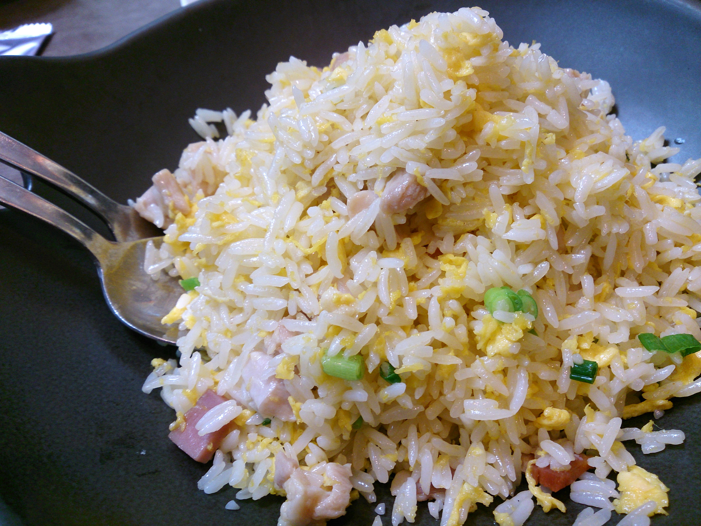

Home
Egg Fried Rice

Description
Simple fried rice recipe that takes ~20 minutes to make.
Ingredients
- 1 cup water
- 2 tablespoons soy sauce
- 1/2 teaspoon salt
- 1 cup uncooked instant rice
- 1 teaspoon vegetable oil
- 1/2 onion, finely chopped
- 1/2 cup sliced green beans or peas
- 1 large egg
- 1/4 teaspoon ground black pepper
Steps
- Collect ingredients.
- Bring water, soy sauce, and salt to a boil in a medium saucepan.
- Stir in instant rice and remove from heat. Cover and let stand for 5 minutes.
- Heat oil in a medium skillet or wok over medium heat.
Sauté onions and green beans in hot oil for 2 to 3 minutes.
- Pour in beaten egg and fry for 2 minutes, scrambling egg while it cooks
- Add cooked rice to egg mixture; mix well. Season with pepper.